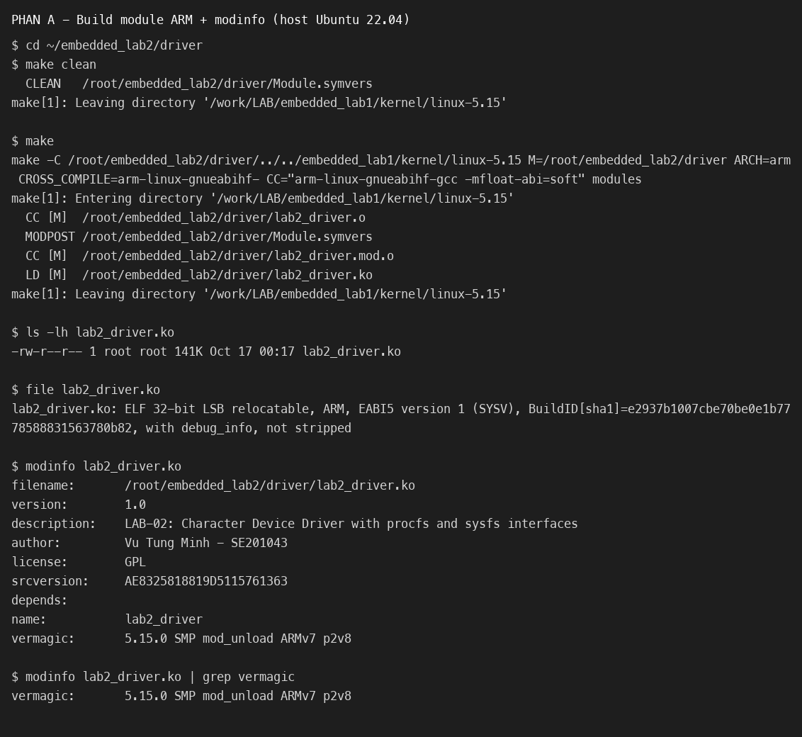
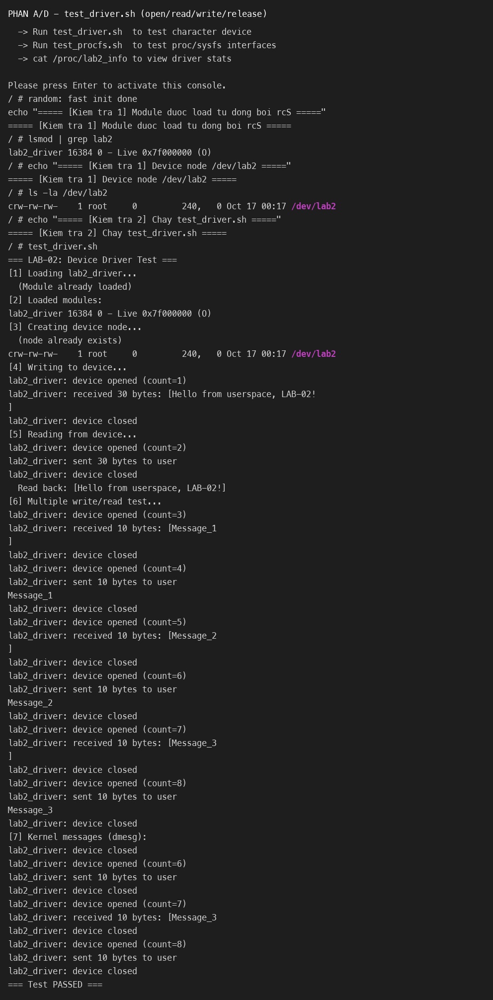
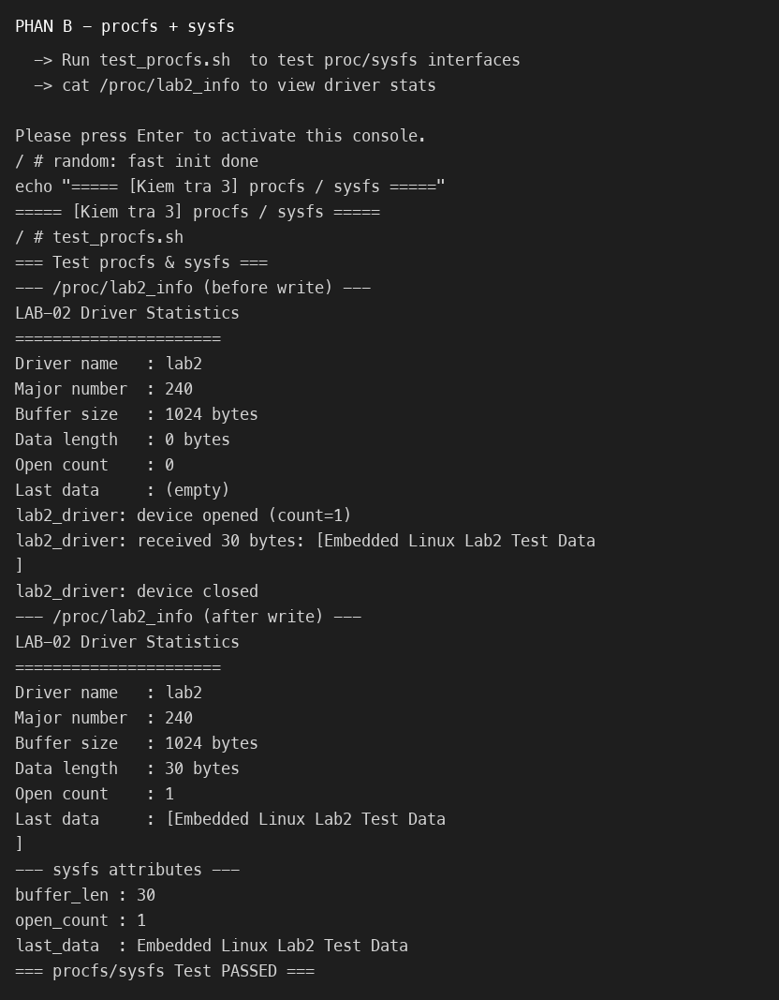
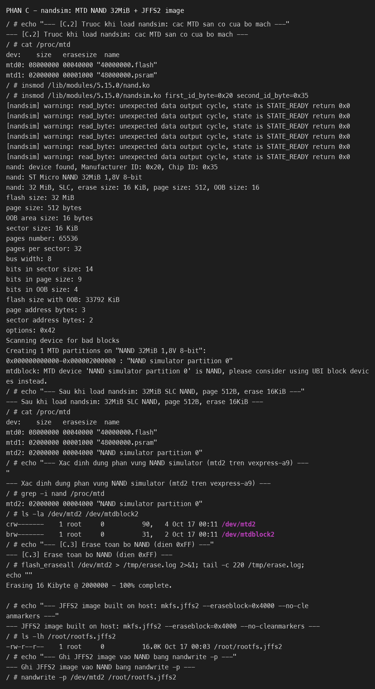
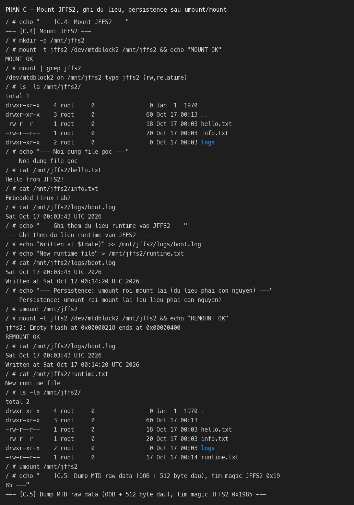
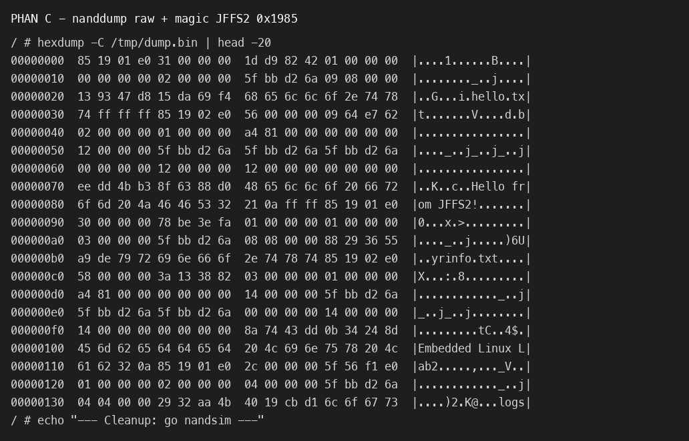
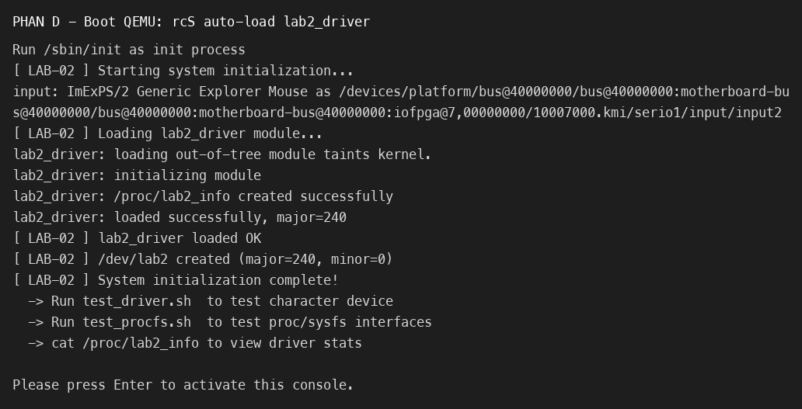

| Họ và tên | Vũ Tùng Minh |
| Mã số sinh viên (MSSV) | SE201043 |
| Lớp chuyên ngành | AS2105 (Môn: LOS201 – Embedded Linux Systems) |
| Thời gian thực hiện | 17/10/2026 |
| Kiến trúc mục tiêu | ARMv7-A – Cortex-A9 (QEMU vexpress-a9, 2 core, 512 MB RAM) |
| Kernel target | Linux 5.15.0 (#2 SMP ... armv7l), cấu hình mở rộng thêm CONFIG_MTD_RAW_NAND=m, CONFIG_MTD_NAND_NANDSIM=m cho Phần C |
| Toolchain | arm-linux-gnueabihf-gcc (Ubuntu 11.4.0-1ubuntu1~22.04.3) 11.4.0 – hard-float ABI |
| Môi trường host | CachyOS Linux x86_64 (kernel 7.2.9) + container Ubuntu 22.04 LTS (Podman); QEMU 6.2.0 |
| Công cụ | mtd-utils 2.1.4, BusyBox 1.35.0 (static, có flash_eraseall, nandwrite, nanddump), fakeroot, cpio |
/lib/modules/7.2.9-1* trống) và tài khoản không có quyền root, nên không thể modprobe nandsim trên host như hướng dẫn. Để vẫn thực hiện đúng bản chất kỹ thuật, em đã biên dịch nandsim.ko kèm kernel target và chạy toàn bộ quy trình MTD → JFFS2 ngay trong QEMU ARM. Trên vexpress-a9, NOR flash và PSRAM của bo mạch đã chiếm mtd0/mtd1, nên NAND simulator là mtd2 (đúng như lưu ý trong đề bài: dùng /proc/mtd để xác định đúng phân vùng). Tất cả số liệu trong báo cáo đều là kết quả chạy thật, không mô phỏng lại.
Luồng dữ liệu từ không gian người dùng xuống driver và ra các giao diện quản trị:
user buffer (địa chỉ ảo user) → copy_from_user(device_buffer, buf, len)
→ [mutex_lock] ghi vào device_buffer → buffer_len = len
→ device_buffer[len] = '\0' → [mutex_unlock]
→ procfs/sysfs đọc lại cùng device_buffer khi người dùng cat
/sys/class/lab2_class/lab2/ ├── buffer_len (0444, DEVICE_ATTR_RO) -> số byte dữ liệu hiện có ├── open_count (0444, DEVICE_ATTR_RO) -> số lần open() tích lũy ├── last_data (0444, DEVICE_ATTR_RO) -> nội dung device_buffer ├── dev -> ánh xạ major:minor (240:0) ├── power/ , subsystem/ , uevent (do kernel device model tạo)
Module được build trực tiếp bởi hệ thống Kbuild của kernel ARM đã build ở LAB-01 (không dùng gcc thường), với CC="arm-linux-gnueabihf-gcc -mfloat-abi=soft" đúng như kernel ARM yêu cầu. modinfo xác nhận vermagic: 5.15.0 SMP mod_unload ARMv7 p2v8 – khớp chính xác kernel target, đây là điều kiện bắt buộc để insmod thành công.

make sinh lab2_driver.ko (ELF 32-bit ARM EABI5), file và modinfo xác nhận license GPL, author và vermagic 5.15.0.Trong QEMU, module được rcS nạp tự động. Script test_driver.sh kiểm tra lần lượt open → write → read → release; kernel log (dmesg) in đúng vòng đời module và số byte nhận/gửi, chứng minh copy_from_user()/copy_to_user() hoạt động và open_count tăng tuần tự (1→8) không bị race trên bộ đệm.

test_driver.sh – ghi 30 byte, đọc lại đúng [Hello from userspace, LAB-02!], vòng lặp write/read 3 lần in lại Message_1..3, kết thúc === Test PASSED ===.Entry /proc/lab2_info dùng seq_file API (single_open()) xuất thống kê dạng text; ba thuộc tính sysfs (buffer_len, open_count, last_data) dùng macro DEVICE_ATTR_RO, mỗi file chỉ chứa một giá trị. Trước khi ghi, Data length = 0 và Last data = (empty); sau khi ghi 30 byte, procfs và sysfs đều phản ánh đúng dữ liệu mới.

test_procfs.sh – /proc/lab2_info trước/sau write, các attribute sysfs đọc được từ userspace, === procfs/sysfs Test PASSED ===.NAND 32 MiB được mô phỏng bằng nandsim first_id_byte=0x20 second_id_byte=0x35 (SLC, page 512 B, eraseblock 16 KiB, OOB 16 B). Kernel nhận diện đúng chip ST Micro NAND 32MiB và tạo phân vùng "NAND simulator partition 0". Vì bo mạch đã có NOR flash (mtd0) và PSRAM (mtd1), phân vùng NAND là mtd2.

nand.ko + nandsim.ko; /proc/mtd xác định NAND simulator là mtd2 (size 0x02000000 = 32 MiB, erasesize 0x4000 = 16 KiB); flash_eraseall /dev/mtd2 xóa sạch flash rồi nandwrite -p ghi image JFFS2.Sau khi mount -t jffs2 /dev/mtdblock2 /mnt/jffs2, các file hello.txt, info.txt, logs/boot.log đọc được đúng nội dung. Ghi thêm dữ liệu runtime, umount rồi mount lại thì dữ liệu vẫn còn nguyên (persistence) – đây là đặc trưng cốt lõi của JFFS2.

runtime.txt và dòng log mới; remount vẫn giữ nguyên toàn bộ dữ liệu.nanddump -o -l 512 dump 512 byte dữ liệu + OOB; hexdump -C cho thấy ngay offset 0 là 85 19 – magic bitmask của node JFFS2, xác nhận image được ghi đúng vào flash.

85 19 ở 0x00 và tên file hello.txt, info.txt, logs xuất hiện trong các dirent node./etc/init.d/rcS (chạy ở action sysinit) mount /proc, /sys, /tmp, /dev rồi insmod module và tạo node /dev/lab2 major 240. Nhờ vậy khi shell mở ra, module đã sẵn sàng.

lab2_driver loaded OK, tạo /dev/lab2 (major=240, minor=0) trước khi mở shell.Trong shell BusyBox, các kiểm tra Mục D.5 đều đạt: lsmod thấy module, /dev/lab2 tồn tại, hai script test PASSED, cat /proc/lab2_info và các attribute sysfs đọc đúng, dmesg | grep lab2 in đủ vòng đời module.
fakeroot, nên /dev/console bị lưu thành regular file thay vì character device c 5 1. Hệ quả: kernel mở /dev/console (fd 0/1/2 của PID 1) trỏ vào file thường nên toàn bộ output của rcS và shell biến mất khỏi cổng serial dù module vẫn nạp. Cách sửa: đóng gói lại bằng fakeroot + mknod để archive chứa đúng device node (giống LAB-01). Sau khi sửa, console serial hoạt động trở lại.| Tiêu chí | ext4 | JFFS2 | cramfs | SquashFS | UBIFS |
|---|---|---|---|---|---|
| Ghi được (writable) | Có | Có | Không (RO) | Không (RO) | Có |
| Wear leveling | Không tích hợp (nhờ FTL/eMMC) | Có (log-structured) | Không | Không | Có |
| Nén | Không (cần ext4 + fscrypt/khác) | Có (zlib/rtime) | Có (zlib, block nén) | Có (gzip/lzo/xz/zstd) | Có |
| Journaling / phục hồi | Journaling | Log-structured (tự phục hồi) | Không (RO) | Không (RO) | Journal (log) |
| Phù hợp thiết bị | eMMC/SD/HDD/SSD | Raw NAND/NOR nhỏ–vừa | Firmware ROM, rootfs RO | Rootfs RO nén, OTA image | NAND lớn, cần hiệu năng |
| Thời gian mount | Nhanh (nhưng cần block layer) | Chậm dần khi FS lớn (quét toàn bộ) | Rất nhanh | Rất nhanh (random access nén) | Nhanh (nhờ anchor/UBI) |
| Hạn chế chính | Không dùng trực tiếp trên raw flash | Mount chậm + RAM cho bảng node khi FS lớn | Chỉ đọc, kích thước block cố định | Chỉ đọc (cần overlay để ghi) | Cần UBI, không hợp NOR/FS < 4 MB |
ext4 trực tiếp trên raw NAND.memcpy() thay copy_to_user()/copy_from_user()?Trong kiến trúc ARMv7 có MMU, mỗi tiến trình user có không gian địa chỉ ảo riêng (bảng trang riêng); kernel space nằm ở vùng địa chỉ riêng và được ánh xạ cho mọi tiến trình. Con trỏ char __user *buf là địa chỉ ảo user – chỉ có ý nghĩa với bảng trang của tiến trình đang gọi. Nếu kernel memcpy() trực tiếp con trỏ này:
memcpy() không có cơ chế xử lý an toàn nên có thể Kernel Oops / panic, hoặc ghi sai chỗ.NULL, trỏ vào vùng chỉ đọc, hoặc cố tình trỏ vào địa chỉ kernel → leo thang đặc quyền (user đọc/ghi được bộ nhớ kernel).copy_to_user()/copy_from_user() thực hiện theo đúng quy trình: kiểm tra vùng địa chỉ (access_ok()), dùng cơ chế copy đặc biệt có bắt page fault (qua exception table __ex_table), và trả về số byte chưa copy (khác 0) để driver trả -EFAULT thay vì treo máy. Trong bài lab, nhờ dùng đúng API mà thao tác ghi/đọc /dev/lab2 luôn nhận đúng 30 byte và không hề gây Oops.
DEFINE_MUTEX(lab2_mutex)? Race condition nếu bỏ mutex?device_buffer, buffer_len, open_count là tài nguyên dùng chung giữa nhiều tiến trình/CPU. Nếu không có mutex, hai process gọi write() đồng thời có thể bị đan xen (interleaving):
P1: write("AAAAAAAAAA") P2: write("BBBBBBBBBB")
copy_from_user(device_buffer,"AAAAAAAAAA",10) // đang ghi
copy_from_user(device_buffer,"BBBBBBBBBB",10)
buffer_len = 10 // P1
buffer_len = 10 // P2 (ghi đè)
device_buffer[10]='\0' device_buffer[10]='\0'
Kết quả có thể là dữ liệu bị trộn lẫn (nửa A nửa B), hoặc buffer_len không khớp với nội dung thực, khiến process đọc ra rác / dữ liệu rác giữa các phiên. Với open_count++ không khóa, thao tác read-modify-write của hai CPU có thể mất một lần tăng (lost update). Mutex đưa các process đến sau vào trạng thái sleep (không busy-wait) cho đến khi lock được giải phóng, đảm bảo tính nguyên tử và nhất quán. Trong log thực tế, open_count tăng liên tục và đúng 1→8 dù nhiều lần mở/đóng – bằng chứng vùng găng được bảo vệ đúng.
procfs ra đời trước, chủ yếu để xuất trạng thái tiến trình và thông tin kernel dạng text tự do; sysfs là hệ thống file ảo có cấu trúc phân cấp theo mô hình thiết bị (kobject). Kernel documentation khuyến nghị không thêm file tùy tiện vào /proc vì:
Với driver bài lab: thống kê tổng hợp (/proc/lab2_info: tên driver, major, buffer size, data length, open count, last data) phù hợp đặt ở /proc vì đây là dữ liệu "nhiều dòng, mang tính báo cáo". Ngược lại, các thuộc tính đơn trị có thể đọc/ghi theo từng cái một (buffer_len, open_count, last_data) đặt ở sysfs; chúng tuân thủ one-value-per-file và tự gắn vào kobject của thiết bị nên dễ quản lý bằng script/udev.
Đặc tính vật lý của flash NAND/NOR khác đĩa từ/SSD có FTL: (1) ghi chỉ đổi bit 1 → 0, không đổi được 0 → 1; (2) đơn vị xóa là eraseblock (16–256 KiB), không xóa từng byte; (3) số chu kỳ xóa giới hạn. Vì vậy không thể "ghi đè tại chỗ" như ext4 (ghi trực tiếp lên sector bất kỳ qua block layer). Muốn ghi giá trị mới cho một vùng, trước hết phải erase cả eraseblock về 0xFF. Trong bài lab, sau flash_eraseall /dev/mtd2 khi mount nhầm phân vùng chưa format, kernel báo "Magic bitmask 0x1985 not found … 0xffff" và "Cowardly refusing to erase blocks on filesystem with no valid JFFS2 nodes" – minh họa rõ rằng vùng flash sạch là 0xFF và JFFS2 cần node hợp lệ mới mount được.
JFFS2 giải quyết bằng thiết kế log-structured: mỗi thay đổi được ghi thành một node mới (kèm CRC và version) vào chỗ flash trống thay vì sửa node cũ; node cũ bị đánh dấu "obsolete". Khi hết chỗ, garbage collector chọn eraseblock có nhiều node cũ, copy các node còn sống sang block khác rồi mới erase block đó. Nhờ ghi trải đều và chỉ ghi tăng thêm, JFFS2 có wear-leveling và bad-block management tích hợp, phù hợp raw flash nhỏ.
insmod trong rcS thất bại, hệ thống có boot tiếp không?Có. BusyBox init chạy các dòng trong /etc/inittab tuần tự; rcS chỉ là một process được gọi ở action sysinit. Nếu một lệnh trong rcS thất bại, script vẫn tiếp tục các lệnh sau (trừ khi script đặt set -e hoặc tự exit), và init vẫn chuyển sang mở shell ở dòng ::askfirst:-/bin/sh. Nói cách khác, lỗi load module mặc định là non-critical: hệ thống vẫn boot, chỉ thiếu chức năng của module. Chỉ các lỗi nghiêm trọng như mount thất bại với rootfs, hoặc exec /sbin/init thất bại, mới làm kernel panic/dừng boot.
Để phân biệt mức độ, script cần kiểm tra mã trả về của từng bước quan trọng và quyết định rõ ràng. Trong bài lab, rcS đã kiểm tra $? sau insmod và in cảnh báo "ERROR: insmod lab2_driver failed (non-critical, continuing boot)!" nhưng vẫn tiếp tục – đúng với triết lý "degrade gracefully". Có thể cải thiện như sau:
#!/bin/sh
# Ham bao loi nghiem trong: ghi log va dung boot
die() { echo "[ LAB-02 ] FATAL: $1"; exec /bin/sh; } # hoac: reboot -f
mount -t proc none /proc || die "khong mount duoc /proc"
mount -t sysfs none /sys || die "khong mount duoc /sys"
mount -t devtmpfs none /dev 2>/dev/null || mdev -s
KO=/lib/modules/5.15.0/lab2_driver.ko
if [ -f "$KO" ]; then
if insmod "$KO"; then
mknod /dev/lab2 c 240 0 2>/dev/null; chmod 666 /dev/lab2
else
echo "[ LAB-02 ] WARN: nap $KO that bai (loi ${?}) - tiep tuc boot o che do suy giam"
# co the thu: depmod -a; modprobe lab2_driver
fi
else
echo "[ LAB-02 ] WARN: thieu $KO - driver khong kha dung"
fi
# Dong cuoi: chi bao thanh cong neu module da nam trong lsmod
lsmod | grep -q '^lab2_driver' \
&& echo "[ LAB-02 ] OK: driver san sang" \
|| echo "[ LAB-02 ] CANH BAO: driver KHONG hoat dong"
Nguyên tắc: lỗi có thể phục hồi (module/thiết bị phụ) thì log cảnh báo và tiếp tục; lỗi không thể phục hồi (rootfs, console, init) thì dừng/khởi động lại để tránh hệ thống chạy nửa vời.
Kết quả đạt được: module nạp/gỡ đúng, open/read/write/release hoạt động, procfs + sysfs xuất đúng thống kê, nandsim + JFFS2 mount/ghi/persistence thành công, module được auto-load khi boot.
fakeroot nên /dev/console là regular file. Cách giải quyết: dùng fakeroot + mknod để đóng gói /dev/console (c 5 1), /dev/null, /dev/zero, /dev/random thành character device – giống cách LAB-01 đã làm.modprobe nandsim được trên host: kernel host đang chạy (7.2.9-1) thiếu thư mục module và không có quyền root. Cách giải quyết: bật CONFIG_MTD_RAW_NAND=m + CONFIG_MTD_NAND_NANDSIM=m, build nand.ko/nandsim.ko kèm kernel target và chạy MTD/JFFS2 ngay trong QEMU ARM; đồng thời xác định NAND simulator là mtd2 nhờ /proc/mtd thay vì giả định mtd0.dmb ish: do thiếu cờ -mfloat-abi=soft khiến cc-option -march=armv7-a thất bại và rớt xuống armv5t. Cách giải quyết: build với CC="arm-linux-gnueabihf-gcc -mfloat-abi=soft" (đúng như kernel ARM yêu cầu).